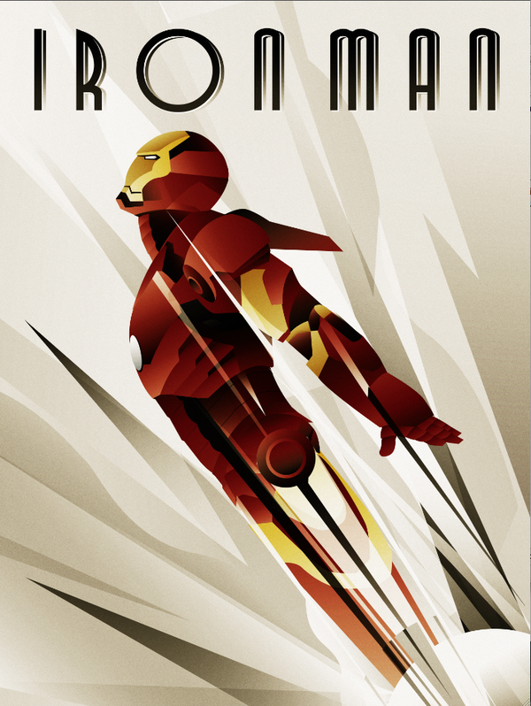

Who is Iron Man?
He's the man covered in iron plates that are colored red and gold.
What does he do?
He saves people's lives from evil doers that try to ruin his face.
Why does he do it?
He does it because he can .
"Iron Man" is based off of a Marvel Comicbook created by Stan Lee, Larry Lieber, Don Heck and Jack Kirby. A billionaire playboy, but also an ingenious engineer, suffers a kidnapping for his intel on making weapons. Instead, he built himself a suit in which he uses to escape from the evil doers and later uses as a method to help save humanity from harm.
Iron Man in 2008 was made into a movie, in which Jon Favreau directed.
 Source Repository